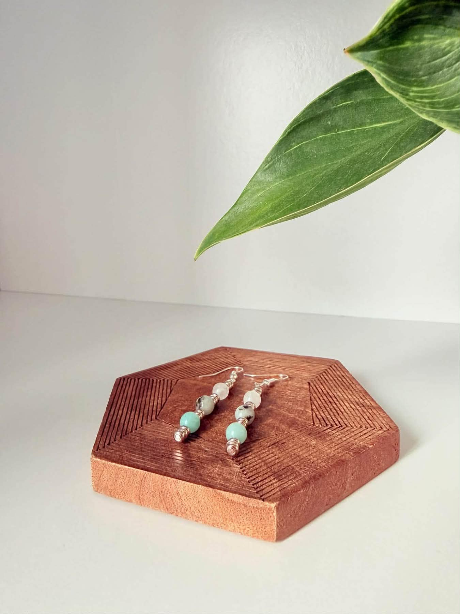

Earrings
Medium Earrings
Three stones dropped on a silver-tone wire, a fine coil set between each. Slim, quiet, and light enough to wear from morning through dinner.
| Stones | Amazonite · Sesame Jasper · White Jade |
|---|---|
| Carries | Calm · Grounding · Harmony · Balance |
| Made | By hand, in Orillia |